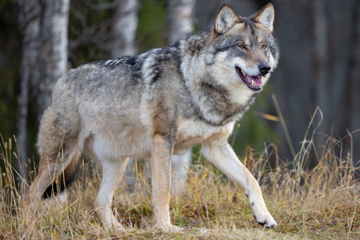
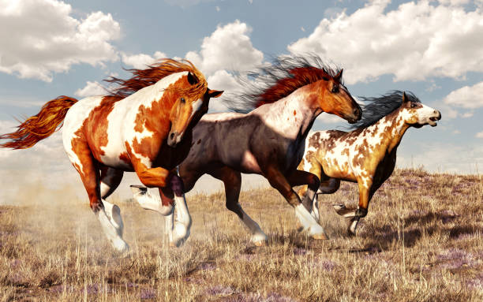

Breed Name
test test
Humans have been domesticating animals for thousands of years. While early domestication was for food, there were other animals that were domesticated and served a different purpose like dogs, cats, horses, and many others. Humans have bred these animals to fulfill a purpose. But now, we are at a point in human history where most of these animals are not just pets but also our friends. Animals are not mindless play things, they have emotions. We tend to forget this because we don't communicate with words but there can be an understanding between each other. Even though there are many animals that live a nice and comfortable life, there are millions of animals being abused around the world (https://www.shelteranimalscount.org/animal-abuse-facts-and-statistics-2024/). A reminder that we as humans share some responsibility to protect them. This website is to help inform people of the history of domestication, different dog breeds, and spread awareness of animals being abused or abandoned by their fellow humans.
Dogs or should I say wolves were the first animal ever domesticated by humans. There are many debates on how this happen, but the two mains ones are that argued. One of the hypothese that is argued is that humans collected young pups from their dens, either from abandoned dens, wolves that were, or stolen. They were then raised and were friendly and helpful in hunting so they were bred for selective traits. The second hypothese is that wolves domesticated themselves, wolves that were less aggressive and anxious visited human camps where humans threw their trash and food scrap but didnt harm humans and vice versa ("How Did Wolves Become Dogs?"). Even though there are debates on the domestication it is true that humans bred dogs for certain traits as seen with the many different breeds.
340 Different Breeds!
The average dog get 12-14 hours of sleep!
There are approximately 900 million dog in the world!
Cats were domesticated around 3600-4700 years ago in Egypt (The origins of cats). There were many cat skulls found in Egypt, they were from the African wildcat which is the ancestor of the modern day cat. Unlike dogs, cats were domesticated by themselves. Around 10,000 years ago when humans started storing grain, the mouse population started to rise. This attracted wild cats to be around humans and led to their domestication (The origins of cats). Cats were worshiped by the Egyptians where they were bred and even sacrificed to thier goddess Bastet, they were also mummified and buried. The relationships of cats and humans can be seen as a mutualistic relationship because cats helped with mouse infestation and cats get a stable food source.
15-45 different cat breed depending on the source!
Cats sleep 12-18 hours a day!
Cats have great vision in the dark!
Horses were domesticated around 6,000 years ago! The domestication took place in north of the Black Sea from Ukraine to Kazakhstan (Origin of Horse Domestication). There are still questions whether horses were domesticated in a single location or in a larger scale. Horses were important because they gave people a way of transport. Horses play an important role in human society because they were used to draw chariots and wagons for trade or for war. Studys tried to back tract the origin of modern horses like dogs and cats but there is no signle one spieces of horse breed like there is for dogs and cats. Today, there are 3 different type of horse breeds, the first one is heavy horses which are used for heavy draft and farm word, the second is light breeds which are mainly used for riding and racing, and last one are ponies which are mainly used for riding.
Did you know horses can sleep standing up!
Horses get up to 5-7 hours of sleep
THere are around 400 horse breeds!
test test